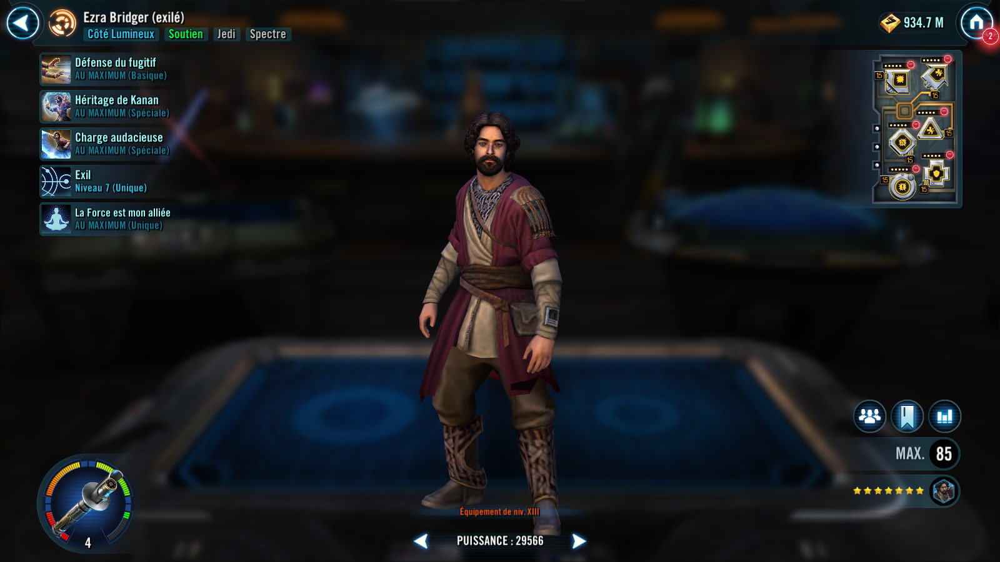
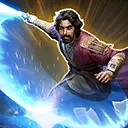
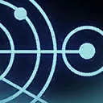

Ezra Bridger (Exile)
An exiled Support who uses his connection to the Force to assist his allies
An exiled Support who uses his connection to the Force to assist his allies

Deal Physical damage to target enemy and inflict Speed Down on them for 3 turns. If all allies are Spectre and this attack scores a critical hit, Ezra Bridger (Exile) and another random ally gain Foresight for 1 turn, and target enemy is Staggered for 2 turns.
All allies recover 40% Health and Protection.
Grant all Spectre allies and the target ally Protection Up (50%, stacking) for 2 turns and dispel all debuffs on them. Target other ally attacks and Ezra Bridger (Exile) assists, dealing 40% more damage and both receive bonuses based on their tags:
- Jedi: Tenacity Up for 2 turns
- Unaligned Force User: Defense Up for 2 turns
- Spectre: Backup Plan for 2 turns, which can't be copied or dispelled and Riposte for 2 turns
If the target ally is a Jedi, Light Side Unaligned Force User, or a Spectre, they gain a bonus turn. If the target ally is a Spectre, they also gain 100% Offense on their next turn and will dispel all buffs from the target enemy and Blind the target enemy for 2 turns, which can't be evaded, on their next attack.
If all allies are Spectre, Ezra gains 2 stacks of Resilient Defense for 2 turns (max 4) and 5 stacks of Purrgil Migration for the rest of battle.
omicron Boost : While in Grand Arenas: If all allies are Spectre, Ezra gains 25 stacks of Purrgil Migration and all Spectres gain Backup Plan for 2 turns, which can't be copied or dispelled.

Deal Physical damage to target enemy 3 times and inflict Healing Immunity and Offense Down for 2 turns, which can't be resisted. If all allies are Spectre, for each critical hit scored, reduce the target enemy's Defense by 30% (stacking) for 1 turn. This attack gains 10% Critical Chance for each Spectre ally. If Ezra scores 3 critical hits, the target enemy is Stunned for 1 turn, which can't be copied, dispelled, or resisted.
Omicron Boost : While in Grand Arenas: If all allies are Spectre, for each critical hit scored, deal 20% bonus damage based on the target's Max Health, which can't be evaded.
Inflict Buff Immunity, Healing Immunity, and Offense Down to target enemy for 2 turns, which can't be copied, dispelled, or resisted. Reduce the Cooldown of Daring Advance by 1.

At the start of battle, all Spectre allies gain Foresight and Tenacity Up for 2 turns, and Ezra Bridger (Exile) is Exiled for the rest of battle, which can't be copied, dispelled, or resisted.
If all allies are Spectre at the start of battle, at the start of Ezra's turn, he gains 2 stacks of Resilient Defense (max 4).
The first time each ally is Exiled, they also gain 30% Critical Chance, 60% Defense, and 100% Max Health and Max Protection for the rest of battle.
The first time each ally loses Exile, they gain 30% Critical Chance, 60% Critical Damage, Offense, and Potency, and 30 Speed.
The first time Ezra is Exiled, enemies can't assist or attack again if their attack is targeting Ezra. When Ezra loses Exile for the first time, when he performs an ability, call a random ally to assist.
If all allies are Spectre at the start of battle, all allies have Instant Defeat Immunity while Ezra is active.
Exile: Can't attack, gain buffs, or gain other positive effects during another character's turn; Raid bosses and Galactic Legends instead: any characters who damage them gain Crit Damage Up and Health Steal Up for 1 turn
Omicron Boost : While in Grand Arenas: The first time a Spectre ally gains and loses Exile, they also gain 5% Mastery per Relic level on them. The first time a Spectre ally loses Exile, they gain an additional 30 Speed. These bonuses persist through defeat.
Ezra has +20% Critical Chance and whenever he is inflicted with a debuff, he recovers 25% Health.
If all allies are Spectre, all allies can't have their cooldowns manipulated by enemies.
If all allies are Spectre, whenever Ezra uses an ability, he gains 5 stacks of Purrgil Migration (max 50) for the rest of battle. When he deals damage to an enemy, he gains 2 stacks of Purrgil Migration for the rest of battle. If this attack is a critical hit, he instead gains 5 stacks of Purrgil Migration.
When Ezra reaches 50 stacks of Purrgil Migration, he gains a bonus turn and recovers 100% Max Health and Protection. The next enemy he damages with an ability is inflicted with Exile for the rest of battle, which can't be copied, dispelled, evaded, or resisted and all enemies are inflicted with Ability Block for 1 turn, which can't be copied, dispelled, evaded, or resisted and he loses Exile.
Purrgil Migration: +1% Defense and +1% Tenacity